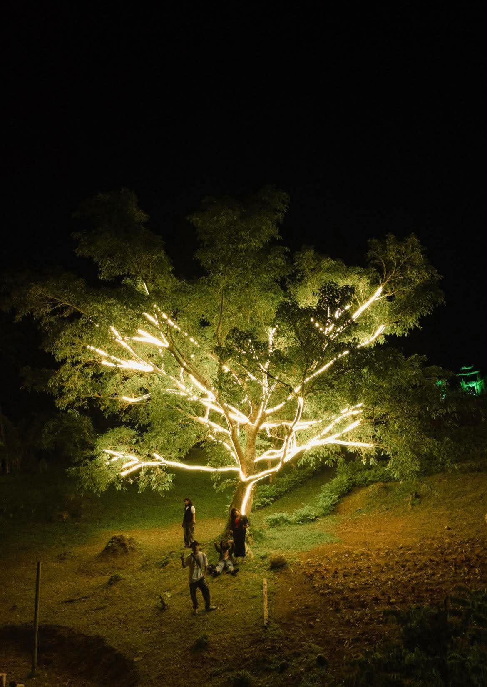
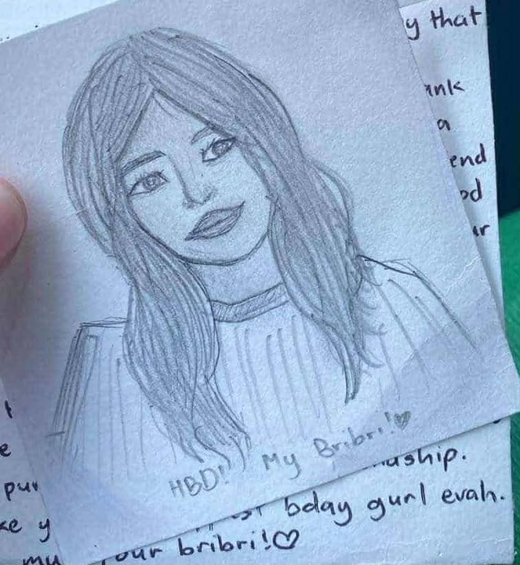
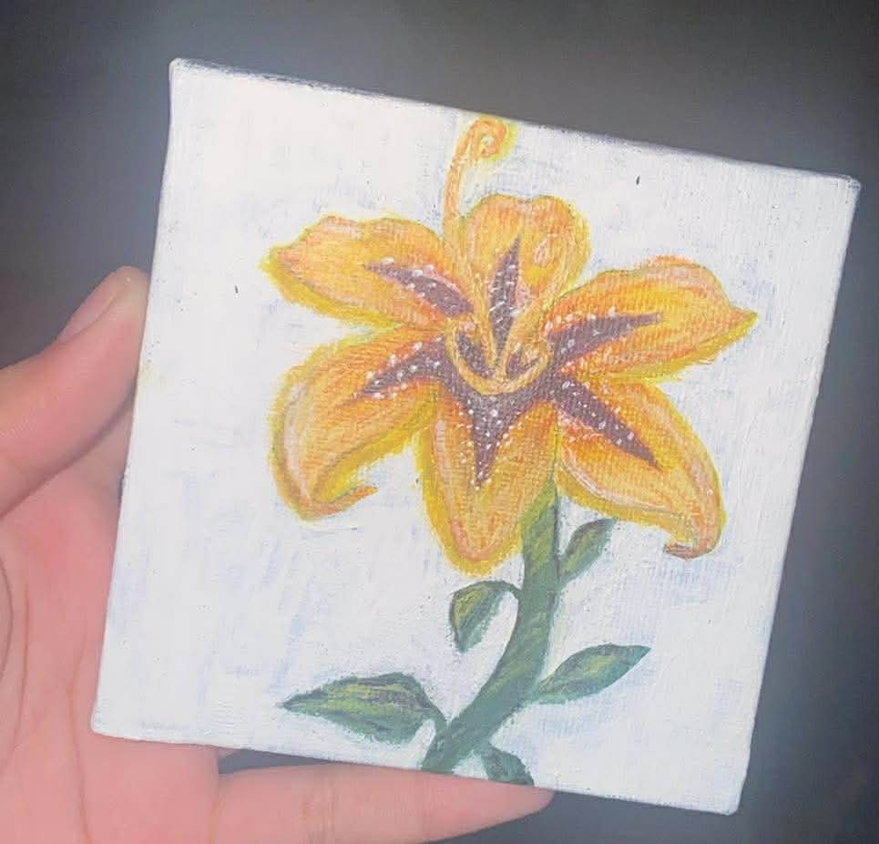
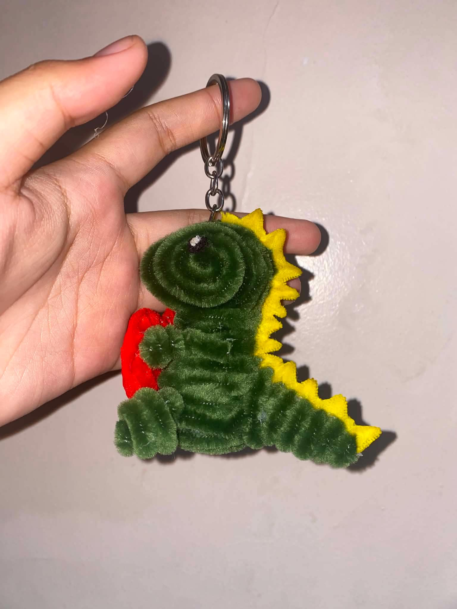

![]()


Hello!
I'm Ash! I'm a first-year Computer Science student who loves turning big, messy ideas into code that actually works.
Here are some facts about me.
Preferred Name:
Ash/Roni
Program:
BS Computer Science (BSCS)
Year Level:
First Year
School:
Bicol University-College of Science (BUCS)

About Me
My Hobbies







My Top 3 Goals

- Graduate

- Land a Job

- Live a Fulfilling Life